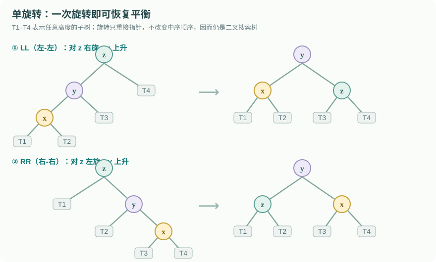
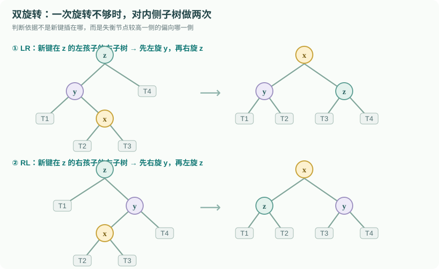
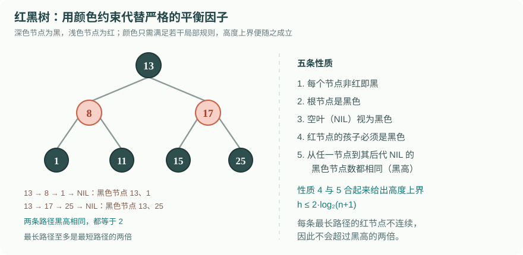

平衡二叉树：AVL 与红黑树
上一章说明 BST 的高度由输入顺序决定，最坏会退化成链。AVL 用严格的高度差约束、红黑树用颜色约束，都在插入与删除时把高度重新压回对数级；两者在增删与查询之间做出不同取舍。
为什么要平衡：从退化到高度上界
上一章末尾我们看到，把 1..5 升序插入会得到一条高度 4 的右链。更一般地，一个有 n 个节点的 BST，查找代价是 O(h)，其中 h 是树高；最坏情况下 h = n−1，与链表无异。如果能把树高控制在 O(log n)，代价就会小得多：
| 节点数 n | 理想平衡高度（≈log₂ n） | 退化高度 |
|---|---|---|
| 1,000 | 约 10 | 999 条边 |
| 1,000,000 | 约 20 | 999,999 条边 |
| 1,000,000,000 | 约 30 | ≈10⁹ 条边 |
表中的“平衡高度”是由 log₂ n 估算的理想值，不是某个具体输入下的实测结果。平衡树做的事，就是在每次插入和删除后，用少量局部重接把树高带回到对数级。本章介绍两类主流方案：AVL 树用严格的高度差约束，红黑树用颜色约束。
平衡因子：用高度差度量倾斜
与前面章节一致，这里的高度按边数计：空子树高 −1，叶节点高 0。节点 v 的平衡因子定义为：
AVL 树要求每个节点的平衡因子都属于 {−1, 0, 1}。例如链状插入 1、2、3 得到的树中，根 1 的右子树高 1、左子树为空（高 −1），于是 BF(1) = (−1) − 1 = −2，超出范围，必须修复。平衡因子只衡量“左右高度差”，与高度本身用边数还是节点数无关——两种约定算出的差值相同。
四种旋转：重接指针而不破坏中序
旋转的本质是把一个节点“提”上去、把另一个“降”下来，同时把中间那棵子树挂到正确位置。以右旋为例：失衡节点为 z，其左孩子 y 上升为子树根；z 变成 y 的右孩子；而 y 原来的右子树 T3 因键值介于 y 与 z 之间，改挂为 z 的左孩子。

当失衡出现在“内侧”时（新键在左孩子的右子树，或右孩子的左子树），单旋转无法修复，需要先对孩子旋转一次把它转成外侧情形，再对失衡节点旋转一次。这就是 LR 与 RL 两种双旋转。

选择插入序列，观察修复动作
下面每个三健序列都会使根失衡，但对应的旋转不同。修复后都是根 2、左右孩子 1 与 3，可用中序遍历验证顺序未变。
AVL 插入：在回溯路径上修复
AVL 插入分两步：先按普通 BST 插入到底部，再在递归返回的路上自下而上检查每个祖先的平衡因子，遇到第一个失衡就旋转。修复函数只看失衡节点与它的两个孩子：
def rebalance(root):
factor = balance_factor(root)
if factor > 1: # 左重
if balance_factor(root.left) < 0: # 左孩子偏右 → LR
root.left = rotate_left(root.left)
return rotate_right(root) # LL 或 LR 的第二步
if factor < -1: # 右重
if balance_factor(root.right) > 0: # 右孩子偏左 → RL
root.right = rotate_right(root.right)
return rotate_left(root) # RR 或 RL 的第二步
return root对 AVL 插入而言，只需在最低的失衡祖先处做一次（单或双）旋转，整棵树就重新满足条件，因此插入的旋转是常数次；代价主要在 O(h) 的查找与回溯上，O(log n)。删除则可能需要沿路径连续旋转多次。
红黑树：用颜色约束代替严格平衡
AVL 要求高度差不超过 1，代价是插入删除时可能频繁旋转。红黑树换用一组局部颜色规则：
- 每个节点非红即黑；
- 根节点是黑色；
- 空叶（NIL）视为黑色；
- 红节点的两个孩子都必须是黑色（不允许连续两代红色）；
- 从任一节点到它所有后代 NIL 的路径上，黑色节点数相同。

一种常用的理解视角是把红黑树看成 2-3-4 树的二叉树表示：一个黑节点带上一个红孩子对应“3 节点”（两个键），带上两个红孩子对应“4 节点”（三个键）。插入时新节点先着红色，若违反性质 4 就通过变色与旋转修复——这恰好对应 2-3-4 树里的节点分裂与提升。对红黑树而言，插入至多 2 次旋转，删除至多 3 次；这一结论的具体推导可参考维基百科条目。
AVL 与红黑树：增删与查询的取舍
两种结构都保证增删查为 O(log n)，差别在于常数与旋转次数，而不是渐进量级：
| 对比项 | AVL 树 | 红黑树 |
|---|---|---|
| 平衡约束 | 每个节点平衡因子 ∈ {−1,0,1} | 颜色规则 1–5 |
| 高度上界 | < 1.44·log₂(n+2) | ≤ 2·log₂(n+1) |
| 查询 | 树高更小，平均更少的比较 | 树高略大，但仍为 O(log n) |
| 插入 / 删除 | 更频繁旋转，插入可能一路回溯 | 插入≤ 2 次、删除≤ 3 次旋转 |
| 实现复杂度 | 旋转逻辑清晰，易推导 | 插入 / 删除分支更多 |
因此工程上常见的直觉是：“读写均衡或写入频繁时用红黑树，查询占绝对主导时可考虑 AVL 类结构”。C++ 的 std::map / std::set、Java 的 TreeMap / TreeSet 常用红黑树实现；具体实现细节应以各标准库文档为准。最重要的认知是：旋转是 O(1)，但一次修改仍需要 O(log n) 的查找与回溯。
常见误区与适用边界
- “平衡树让操作变成 O(1)”：不成立。平衡只把高度降到对数级，增删查仍是 O(log n)。
- “旋转越多越差”：单次旋转是 O(1)；真正代价在于沿路径查找和回溯，与旋转次数无关。
- “中序也变得很快”：输出全部 n 个键至少需要 Ω(n)，中序遍历恒为 O(n)。
- “平衡结构自带有序去重”：重复键的处理仍是实现约定，必须显式定义。
另一个实际限制是：平衡树按比较器工作，每次操作都涉及指针追逐，缓存局部性不如稠密数组。若只需按键频繁查找、不要求有序遍历，哈希表通常是更简单的选择。
带走三个判断准则
- “O(log n)”是对高度 h 的结论；平衡结构做的是给 h 一个可证明的上界。
- 旋转只重接局部指针，不改变中序遍历，所以旋转后的树仍是二叉搜索树。
- AVL 更严格、更利于查询；红黑树更宽松、增删时更少旋转。选型取决于读写比例。
继续学习与校验资料
- MIT 6.006：Binary Trees, Part 1 — 二叉搜索树与平衡概念
- AVL tree（Wikipedia） — 旋转与高度上界 h < 1.44·log₂(n+2) 的来源
- Red–black tree（Wikipedia） — 五条性质与 2-3-4 树等价关系
- 上一章：二叉搜索树 — AVL 要解决的退化问题
- 下一章：堆与优先队列 — 另一种不必全局有序的树